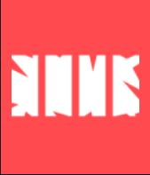
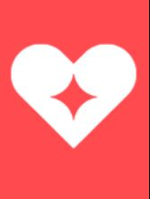
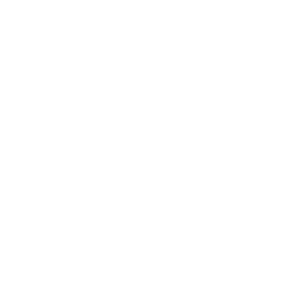

Sage ima cetiri moci:
- Barrier Orb 
- Slow Orb
- Healing Orb 
- Resurrection ult
Sage je sedmi agent u Valorantu. Sa Kineskim korenima ima velike moci za lecenje.
Stvara Sigurnost za sebe i saigrace gde god da ide.
Ima mogucnost da ozivi pale prijatelje i zaustavi agresivne napade uz pomoc ledenog zida.
"I wasn't strong enough before. But now, now I am strong enough for us all."
Na ovom linku mozete pogledati osnove igranja ovog agenta .
Sage mi se dopala od pocetka igranja Valoranta, volim da pomazem saigracima.
Pored toga u pravim rukama nije samo supporter vec pravi Fighter.
Sage 1 in the div.
Sage 2 in the div.
Sage 3 in the div.
Sage 4 in the div.
Sage 5. Not in a div.
Not FoundSage 6. Not in a div.